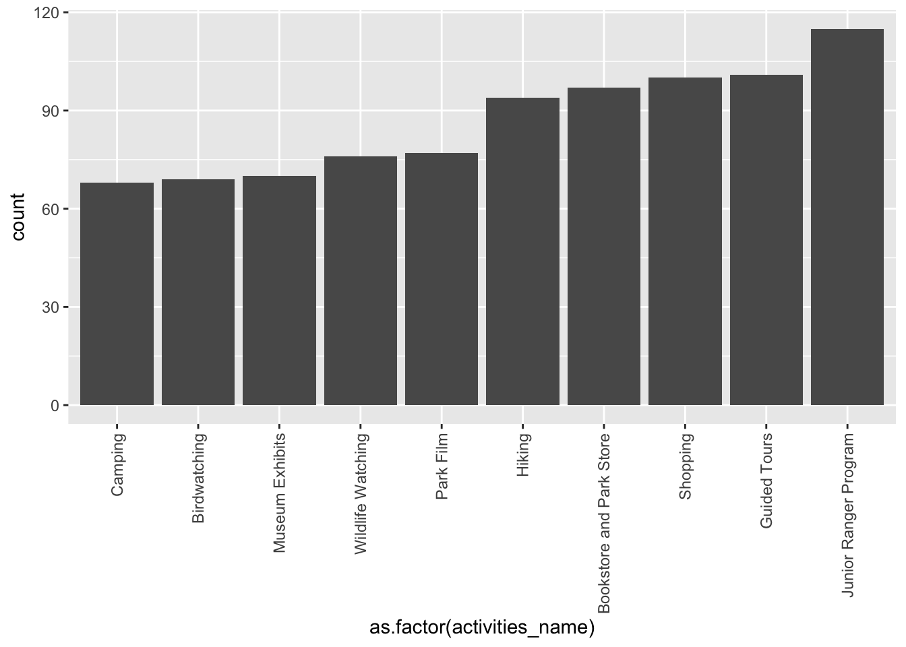

res=GET('https://developer.nps.gov/api/v1/parks?limit=500&api_key=B9nDpbkbrb3kSOjz6kXSxMJ3d6MSpUvt1QqYdeyn')
data = res %>% content("text") %>% jsonlite::fromJSON() %>% as_tibble()NPS_data_parks=data %>% unnest(data) %>% select(fullName,parkCode,description,latitude,longitude,activities,states,entranceFees,operatingHours,designation) %>% unnest(activities,names_sep = '_') %>% unnest(entranceFees,names_sep = '_') %>% unnest(operatingHours,names_sep = '_')
NPS_data_visits=read_csv('data/Query Builder for Public Use Statistics (1979 - Last Calendar Year).csv')## Rows: 101419 Columns: 35
## ── Column specification ──────────────────────────────────────────────────
## Delimiter: ","
## chr (10): ParkName, UnitCode, ParkType, Region, State, ParkNameTotal, UnitCo...
## dbl (3): Year, Month, YearTotal
## num (22): RecreationVisits, NonRecreationVisits, RecreationHours, NonRecreat...
##
## ℹ Use `spec()` to retrieve the full column specification for this data.
## ℹ Specify the column types or set `show_col_types = FALSE` to quiet this message.NPS_Full=NPS_data_parks %>% mutate(entranceFees_cost=as.numeric(entranceFees_cost)) %>%
mutate(parkCode=str_to_upper(parkCode))%>% full_join(NPS_data_visits,by=join_by('parkCode'=='UnitCode'))## Warning in full_join(., NPS_data_visits, by = join_by("parkCode" == "UnitCode")): Detected an unexpected many-to-many relationship between `x` and `y`.
## ℹ Row 1 of `x` matches multiple rows in `y`.
## ℹ Row 289 of `y` matches multiple rows in `x`.
## ℹ If a many-to-many relationship is expected, set `relationship =
## "many-to-many"` to silence this warning.There are many activities available to you when visiting a national park. Between all the parks there are 99 unique activities. Ranging from ATV Off-Roading to Wildlife Watching. This range of activites bring millions of people to our national parks each year. This got us thinking, do the number of activites avalible at each park affect thhe level of visitation? We did some data analysis to find out.
First lets look at all the activies available.
NPS_Full %>% select(activities_name) %>% drop_na()%>% distinct %>% arrange(activities_name) %>% knitr::kable() %>% kable_styling() %>%
scroll_box(width = "100%", height = "200px")| activities_name |
|---|
| ATV Off-Roading |
| Arts and Crafts |
| Arts and Culture |
| Astronomy |
| Auto Off-Roading |
| Auto and ATV |
| Backcountry Camping |
| Backcountry Hiking |
| Biking |
| Birdwatching |
| Boat Tour |
| Boating |
| Bookstore and Park Store |
| Bus/Shuttle Guided Tour |
| Camping |
| Canoe or Kayak Camping |
| Canoeing |
| Canyoneering |
| Car or Front Country Camping |
| Caving |
| Citizen Science |
| Climbing |
| Compass and GPS |
| Craft Demonstrations |
| Cross-Country Skiing |
| Cultural Demonstrations |
| Dining |
| Dog Sledding |
| Downhill Skiing |
| First Person Interpretation |
| Fishing |
| Fly Fishing |
| Flying |
| Food |
| Freshwater Fishing |
| Freshwater Swimming |
| Front-Country Hiking |
| Gathering and Foraging |
| Geocaching |
| Gift Shop and Souvenirs |
| Golf |
| Group Camping |
| Guided Tours |
| Hands-On |
| Hiking |
| Historic Weapons Demonstration |
| Horse Camping (see also Horse/Stock Use) |
| Horse Camping (see also camping) |
| Horse Trekking |
| Horseback Riding |
| Hunting |
| Hunting and Gathering |
| Ice Climbing |
| Ice Skating |
| Jet Skiing |
| Junior Ranger Program |
| Kayaking |
| Live Music |
| Living History |
| Motorized Boating |
| Mountain Biking |
| Mountain Climbing |
| Museum Exhibits |
| Off-Trail Permitted Hiking |
| Orienteering |
| Paddling |
| Park Film |
| Picnicking |
| Playground |
| Pool Swimming |
| RV Camping |
| Reenactments |
| River Tubing |
| Road Biking |
| Rock Climbing |
| SCUBA Diving |
| Sailing |
| Saltwater Fishing |
| Saltwater Swimming |
| Scenic Driving |
| Self-Guided Tours - Auto |
| Self-Guided Tours - Walking |
| Shopping |
| Skiing |
| Snorkeling |
| Snow Play |
| Snow Tubing |
| Snowmobiling |
| Snowshoeing |
| Stand Up Paddleboarding |
| Stargazing |
| Surfing |
| Swimming |
| Theater |
| Tubing |
| Volunteer Vacation |
| Water Skiing |
| Whitewater Rafting |
| Wildlife Watching |
Now let’s take a look at which activites are avalible at the most parks.
NPS_Full %>% select(activities_name,parkCode) %>% drop_na() %>% group_by(activities_name) %>% summarise(count=n_distinct(parkCode)) %>% mutate(activities_name=fct_reorder(activities_name,count)) %>%arrange(count) %>%
tail(10) %>% ggplot(aes(x=as.factor(activities_name),y=count))+geom_col()+theme(axis.text.x = element_text(angle = 90, vjust = 0.5, hjust=1))
Next let’s take a look at the number of activities across the different parks.
NPS_Full %>% select(activities_name,parkCode) %>% drop_na() %>% group_by(parkCode) %>% summarise(act_count=n_distinct(activities_name)) %>% ggplot(aes(x=parkCode,y=act_count))+geom_point()+theme(axis.text.x = element_text(angle = 90, vjust = 0.5, hjust=1))## Activities and Avg Visits Now lets look at activities compared to avg visits.
NPS_Full %>%
group_by(fullName) %>%
summarise(activities_count=n_distinct(activities_id),
avg_visit=mean(RecreationVisits),
cost=mean(entranceFees_cost)
)%>% ggplot(aes(x=activities_count,y=avg_visit))+geom_point()## Warning: Removed 7 rows containing missing values or values outside the scale
## range (`geom_point()`).Lets look further to see if there is a relationship between them.
NPS_Full %>%
group_by(fullName) %>%
summarise(activities_count=n_distinct(activities_id),
avg_visit=mean(RecreationVisits),
cost=mean(entranceFees_cost)
)%>% lm(avg_visit~ activities_count,data=.) %>% broom::tidy()## # A tibble: 2 × 5
## term estimate std.error statistic p.value
## <chr> <dbl> <dbl> <dbl> <dbl>
## 1 (Intercept) 15702. 19350. 0.811 0.419
## 2 activities_count 3384. 744. 4.55 0.0000141It looks like there is a significent relationship, lets add it to our graph.
NPS_Full %>%
group_by(fullName) %>%
summarise(activities_count=n_distinct(activities_id),
avg_visit=mean(RecreationVisits),
)%>% ggplot(aes(x=activities_count,y=avg_visit))+geom_point()+stat_smooth(method = 'lm')## `geom_smooth()` using formula = 'y ~ x'## Warning: Removed 7 rows containing non-finite outside the scale range
## (`stat_smooth()`).## Warning: Removed 7 rows containing missing values or values outside the scale
## range (`geom_point()`).